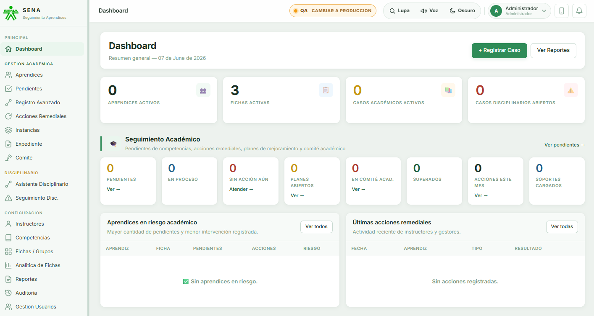
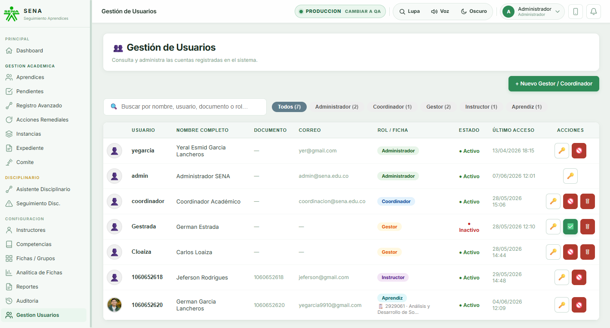
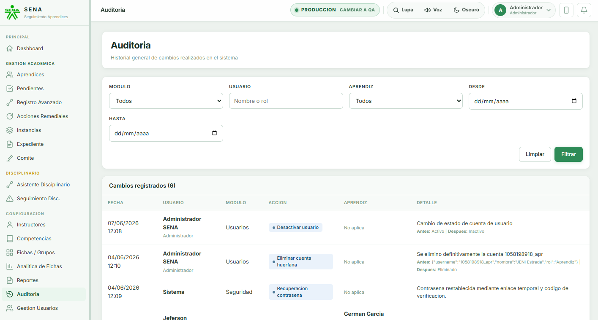
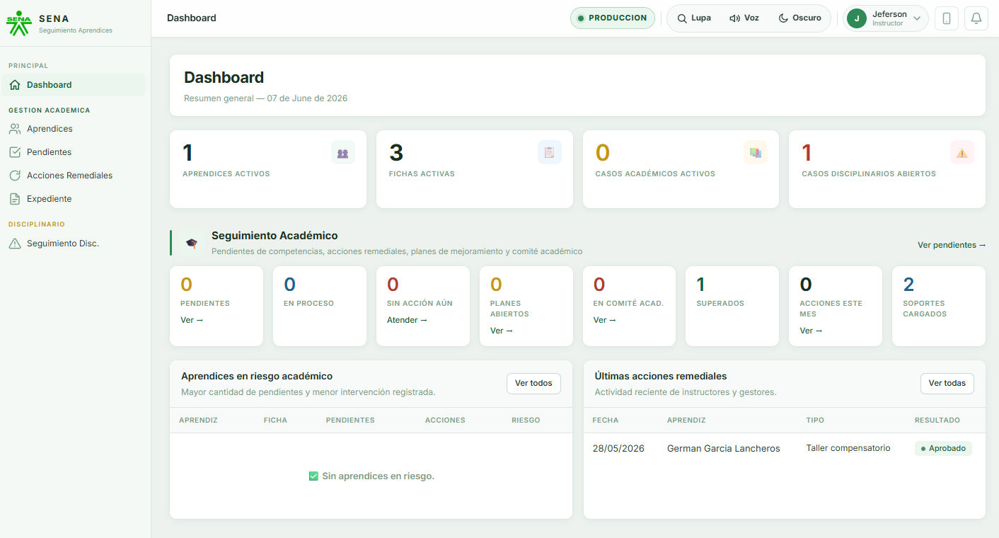
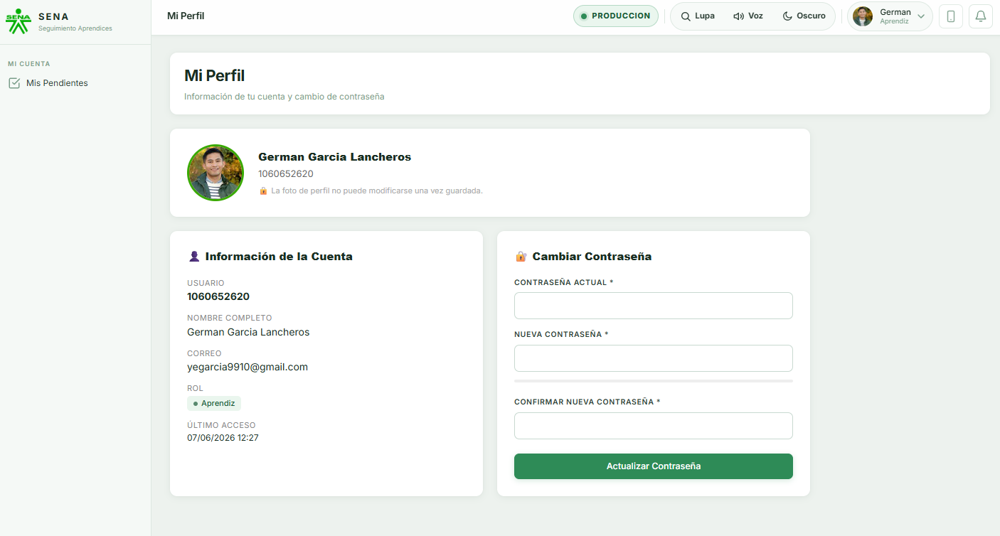
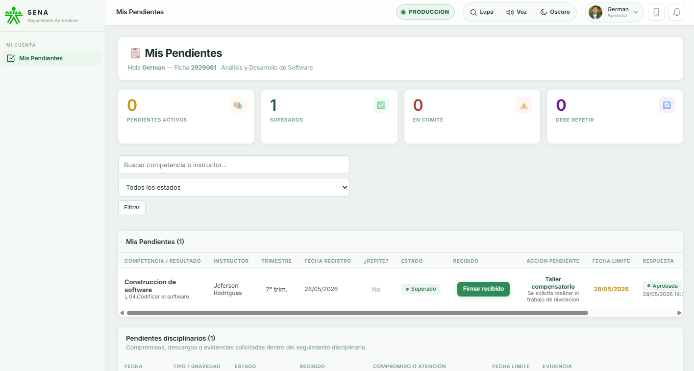
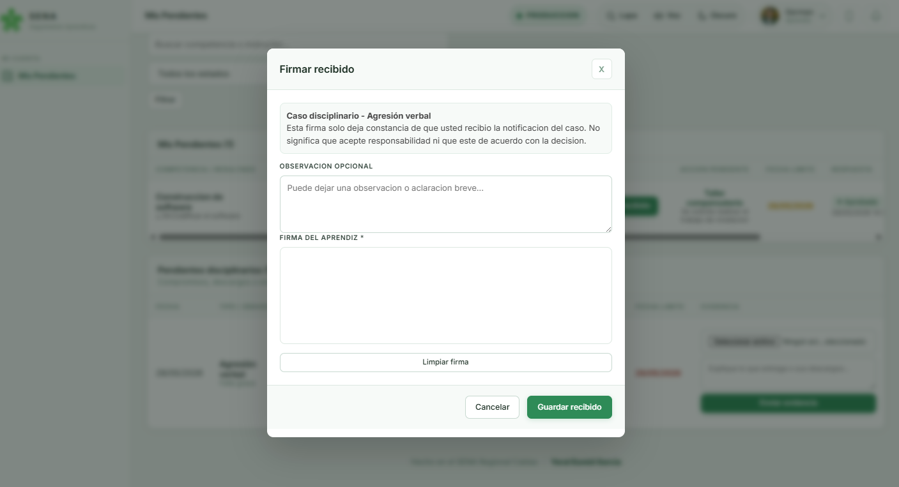
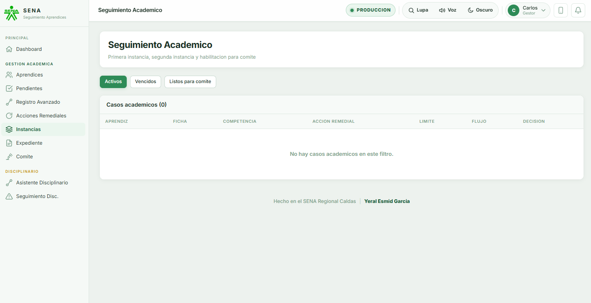
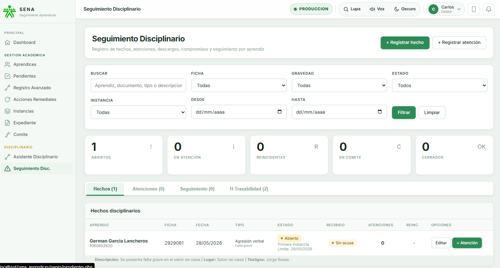
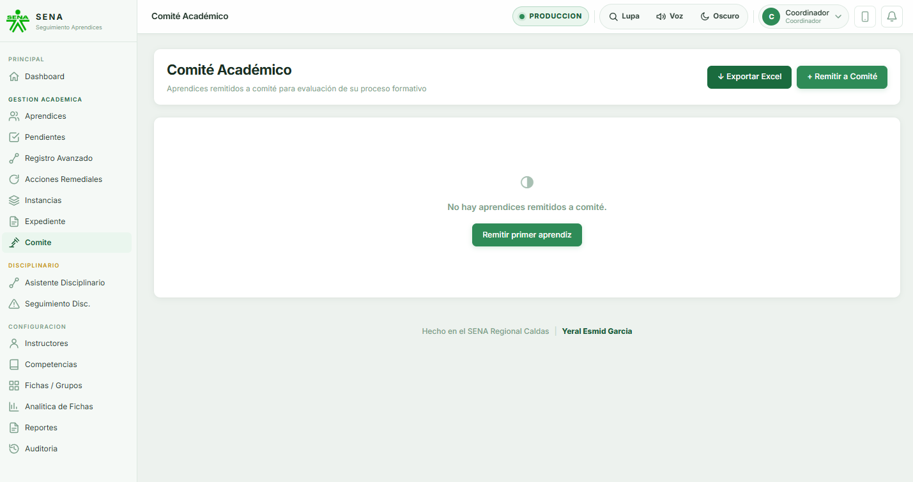

Documentacion del proyecto
Sistema de Seguimiento de Aprendices
Manual de consulta del sistema academico y disciplinario desarrollado para el SENA Regional Caldas.
Ruta rapida
Antes de iniciar
El sistema permite registrar casos academicos y disciplinarios, notificar a los usuarios involucrados, recibir evidencias y dejar trazabilidad del proceso.
Identificar el caso
El caso puede ser academico, por una competencia no aprobada, o disciplinario, por una falta o reincidencia.
Asignar responsables
El sistema relaciona instructor, aprendiz, gestor de grupo y coordinador segun el proceso y la ficha.
Notificar y firmar
El aprendiz recibe el caso, firma recibido y queda constancia de que conoce el pendiente o proceso.
Subir evidencia
El aprendiz carga el trabajo, soporte, descargo o evidencia solicitada antes de la fecha limite.
Revisar y decidir
El responsable aprueba, solicita correccion, rechaza, escala a instancia o remite a comite segun el caso.
Guia para usuarios
Como se usa el sistema por rol
Seleccione un rol para consultar sus funciones, los pasos que debe seguir y las pantallas principales que utiliza.
AD
Administrador
Controla usuarios, entornos, parametros generales, reportes, auditoria y soporte tecnico del sistema.
- Ingresa al sistema y confirma si esta en Produccion o QA.
- Crea usuarios de prueba o reales desde Gestion de Usuarios.
- Asigna roles, fichas, gestores, instructores y coordinadores.
- Revisa auditoria, reportes y respaldos antes de cambios importantes.
- Usa QA para ensayar cambios sin tocar datos reales.
Gestion de usuarios
Desde este modulo el administrador crea y controla las cuentas del sistema. Puede registrar gestores y coordinadores, restablecer contrasenas, desactivar usuarios y eliminar cuentas administrativas cuando no tengan procesos asociados.
Buenas practicas
- Crear o probar usuarios primero en QA cuando sea una demostracion.
- Revisar auditoria despues de cambios importantes.
- Evitar eliminar usuarios con historial; en esos casos es mejor desactivarlos.
Al terminar: los usuarios quedan organizados, con roles definidos y registro de los cambios realizados.



IN
Instructor
Registra novedades academicas o disciplinarias y revisa las evidencias enviadas por el aprendiz.
- Reporta una competencia no aprobada o un hecho disciplinario.
- Define la accion remedial, tipo de entrega, evaluacion y fecha limite.
- El aprendiz y su gestor reciben la notificacion correspondiente.
- Revisa la evidencia, la descarga si aplica y decide aprobar, solicitar correccion o rechazar.
- El sistema conserva trazabilidad de firmas, respuestas y cambios.
Seguimiento academico
El instructor reporta cuando un aprendiz no aprueba una competencia y define una accion remedial con fecha limite, tipo de entrega y, si aplica, evaluacion, exposicion o trabajo escrito.
Revision de evidencias
- Verificar que el aprendiz haya firmado recibido.
- Descargar o revisar el soporte enviado.
- Aprobar si cumple, solicitar correccion si hay fallas o rechazar si no responde al compromiso.
Al terminar: el caso queda registrado y el aprendiz conoce que debe entregar, corregir o presentar.

AP
Aprendiz
Consulta pendientes, firma recibido, sube evidencias y responde dentro de los tiempos establecidos.
- Ingresa a Pendientes para ver acciones academicas o disciplinarias.
- Firma el recibido digital del caso asignado.
- Lee la accion solicitada, fecha limite y tipo de entrega.
- Sube evidencia o respuesta desde el pendiente correspondiente.
- Atiende correcciones antes de pasar a nuevas instancias.
Atencion de pendientes
El aprendiz entra al sistema para revisar sus compromisos academicos o disciplinarios. Cada pendiente muestra descripcion, fecha limite, estado, firma de recibido y opcion para subir evidencia.
Firma y evidencia
- Firmar recibido confirma que el aprendiz fue notificado.
- La evidencia debe subirse antes de la fecha limite.
- Si el instructor solicita correccion, el aprendiz debe responder nuevamente.
Al terminar: el aprendiz deja evidencia de su respuesta y el responsable puede revisar el cumplimiento.



GE
Gestor de grupo
Acompana los casos del aprendiz, revisa alertas y activa instancias cuando el proceso lo requiere.
- Recibe notificaciones de casos academicos o disciplinarios de sus aprendices.
- Consulta expediente, pendientes, evidencias y trazabilidad.
- Gestiona primera instancia cuando el aprendiz no cumple los compromisos.
- Escala a segunda instancia o comite cuando el caso lo requiere.
- Coordina con instructores y coordinacion para dejar decisiones registradas.
Acompanamiento del grupo
El gestor revisa los aprendices de su ficha, identifica pendientes sin respuesta y acompana los casos que ya requieren primera instancia o seguimiento mas cercano.
Escalamiento
- Primera instancia cuando el aprendiz no cumple el pendiente academico.
- Seguimiento disciplinario cuando hay faltas registradas o reincidencias.
- Remision a coordinacion cuando el caso supera la gestion del grupo.
Al terminar: el caso queda con seguimiento, responsable asignado y decisiones registradas.


CO
Coordinador
Participa en decisiones de instancia, valida casos criticos y acompana el paso a comite.
- Revisa casos escalados por el gestor de grupo.
- Consulta historial academico y disciplinario antes de decidir.
- Registra decisiones de primera o segunda instancia.
- Notifica al aprendiz cuando entra en proceso formal.
- Habilita el paso a comite cuando ya se agotaron las etapas previas.
Decision institucional
El coordinador acompana los casos que requieren decision formal, revisa el historial del aprendiz y valida si corresponde continuar en segunda instancia o pasar a comite.
Aspectos que revisa
- Historial academico y disciplinario del aprendiz.
- Firmas de recibido, evidencias, correcciones y fechas limite.
- Reincidencias, faltas graves o incumplimientos acumulados.
Al terminar: la decision queda soportada con historial, evidencias y registro del proceso.

Guia independiente
Documentacion tecnica
Esta guia resume la instalacion, estructura, seguridad, base de datos y mantenimiento del sistema.
Guia tecnica
Tecnologias y estructura del proyecto
Informacion de apoyo para instalar, revisar y mantener el proyecto.
Backend
El sistema usa PHP y PDO para conectarse a MySQL/MariaDB. Las pantallas se organizan por modulos y reutilizan archivos comunes.
Base de datos
MySQL/MariaDB guarda usuarios, aprendices, fichas, competencias, acciones remediales, casos disciplinarios, notificaciones, auditoria y firmas.
Interfaz
HTML, CSS y JavaScript se usan para las pantallas, formularios, modales, alertas, modo oscuro, lupa y voz por cursor.
Entornos
Produccion y QA trabajan por separado. QA se usa para pruebas, usuarios de demostracion y simulacion de roles.
Publicacion
Esta guia puede publicarse en Vercel. El sistema principal requiere XAMPP o un hosting con PHP y MySQL.
Carpetas principales
- config: conexion y configuraciones base.
- includes: autenticacion, layout, notificaciones, auditoria y componentes comunes.
- pages: pantallas principales del sistema por modulo.
- assets: estilos, JavaScript, imagenes e iconos.
- uploads: soportes, evidencias y archivos cargados por usuarios.
Seguridad y control
- Sesiones y permisos por rol.
- Contrasenas protegidas con hash.
- Recuperacion segura de contrasena.
- Auditoria de cambios relevantes.
- Firmas digitales de recibido por parte del aprendiz.
Arbol general del codigo
Estructura principal del proyecto. Cada carpeta cumple una funcion dentro del sistema.
sena_aprendices/
|-- index.php # Login principal
|-- logout.php # Cierre de sesion
|-- recuperar_password.php # Solicitud para recuperar contrasena
|-- restablecer_password.php # Cambio seguro de contrasena
|-- manifest.json # Configuracion PWA
|-- sw.js # Service worker
|-- sena_aprendices.sql # Base de datos inicial
|-- actualizacion_expediente.sql # Migraciones del expediente
|-- migracion_rol_aprendiz.sql # Migracion de rol aprendiz
|
|-- config/
| `-- database.php # Conexion a MySQL/MariaDB
|
|-- includes/
| |-- auth.php # Sesiones, login y roles
| |-- header.php # Layout superior y menu
| |-- footer.php # Cierre visual del sistema
| |-- notificaciones.php # Alertas internas y correos
| |-- password_reset.php # Recuperacion segura de contrasena
| |-- acuse_recibido.php # Firma digital de recibido
| |-- expediente_schema.php # Validaciones/migraciones del expediente
| `-- mail_config.php # Configuracion de correo
|
|-- pages/
| |-- dashboard.php # Resumen general por rol
| |-- aprendices.php # Registro y consulta de aprendices
| |-- instructores.php # Gestion de instructores
| |-- gestion_usuarios.php # Administracion de cuentas
| |-- pendientes.php # Reportes academicos
| |-- acciones.php # Acciones remediales
| |-- mis_pendientes.php # Vista del aprendiz
| |-- seguimiento_academico.php # Flujo academico
| |-- disciplinario.php # Seguimiento disciplinario
| |-- asistente_caso.php # Asistente academico
| |-- asistente_disciplinario.php # Asistente disciplinario
| |-- expediente.php # Historial integrado
| |-- expediente_pdf.php # Exportacion del expediente
| |-- comite.php # Comite academico/disciplinario
| |-- auditoria.php # Historial de cambios
| |-- reportes.php # Reportes administrativos
| |-- seleccionar_entorno.php # Produccion / QA
| |-- simular_usuario_qa.php # Ver sistema como otro rol en QA
| `-- subir_foto.php # Foto obligatoria de usuario
|
|-- ajax/ # Peticiones internas sin recargar pagina
|-- assets/ # CSS, JavaScript e imagenes de interfaz
|-- image/ # Logos e iconos institucionales
|-- libs/ # Librerias externas como PHPMailer
`-- uploads/ # Evidencias, soportes y fotos cargadasRequisitos para ejecutar el sistema
- XAMPP con Apache y MySQL/MariaDB activos.
- PHP 8 o version compatible con PDO.
- Navegador moderno para usar modales, voz, lupa y modo oscuro.
- Base de datos importada desde phpMyAdmin o consola MySQL.
Instalacion local recomendada
- Copiar el proyecto en `C:\xampp\htdocs\sena_aprendices`.
- Crear la base de datos principal en MySQL.
- Importar el archivo SQL actualizado.
- Revisar `config/database.php` y confirmar nombre de base de datos, usuario y contrasena.
- Entrar desde `http://localhost/sena_aprendices/`.
Produccion y QA
El proyecto maneja dos entornos. Produccion conserva la informacion real. QA se usa para pruebas y demostraciones.
- Produccion: carpeta `sena_aprendices` y base principal.
- QA: carpeta `sena_aprendices_qa` y base de datos independiente.
- El administrador puede identificar el entorno y cambiar entre QA y Produccion.
Modulos funcionales
- Gestion academica: pendientes, acciones remediales, evidencias, correcciones e instancias.
- Gestion disciplinaria: hechos, faltas, reincidencias, seguimiento, descargos y comite.
- Expediente: historial integrado del aprendiz.
- Notificaciones: alertas internas para aprendiz, instructor, gestor y coordinador.
- Accesibilidad: lupa, voz por cursor y modo oscuro.
Seguridad aplicada
- Acceso controlado por roles.
- Contrasenas almacenadas con hash.
- Recuperacion de contrasena con token temporal y codigo.
- Auditoria de acciones relevantes.
- Firma digital de recibido para dejar constancia de notificacion.
Mantenimiento y respaldo
Antes de realizar cambios importantes se debe copiar la carpeta del sistema y exportar la base de datos. Los cambios se prueban primero en QA.
- Exportar SQL desde phpMyAdmin.
- Guardar copia de `uploads` para no perder evidencias.
- Revisar auditoria despues de eliminar, desactivar o cambiar usuarios.
- Validar cada rol antes de entregar una version final.
Base de datos
Informacion guardada en la base de datos
La base de datos guarda la informacion necesaria para usuarios, fichas, aprendices, procesos academicos, procesos disciplinarios, evidencias, auditoria y notificaciones.
Usuarios y roles
Tabla central para login, permisos, estado activo, cambio de contrasena y relacion con aprendiz, instructor, gestor, coordinador o administrador.
Aprendices, fichas y competencias
Relaciona la informacion academica base: documento, datos personales, ficha, programa, competencia e instructor responsable.
Pendientes academicos
Registra competencias no aprobadas, estado del caso, fechas limite, accion remedial, evidencias, correcciones e instancias.
Seguimiento disciplinario
Guarda hechos, faltas, atenciones, reincidencias, descargos, compromisos, comite y cierre del proceso disciplinario.
Notificaciones y auditoria
Registra notificaciones, acciones realizadas, fecha del cambio y usuario responsable.
Uploads y soportes
Los archivos fisicos quedan en `uploads`; la base guarda referencias, fechas, estados y relacion con cada caso.
Secuencia del proceso
Flujo academico y disciplinario
Registro del caso
El instructor registra la novedad academica o disciplinaria con aprendiz, ficha, descripcion y soporte.
Notificacion
El aprendiz y el gestor reciben aviso del caso. En casos escalados tambien participa coordinacion.
Respuesta
El aprendiz firma recibido y carga evidencia, descargo o correccion dentro de la fecha limite.
Revision
El instructor, gestor o coordinador revisa evidencias y decide aprobar, corregir, escalar o cerrar.
Instancia o comite
Si no hay cumplimiento, el caso pasa a primera instancia, segunda instancia o comite segun el proceso.
Material audiovisual
Videos de apoyo por rol
Videos para consultar el uso del sistema segun el rol del usuario.
Ayuda
Preguntas frecuentes
Dudas comunes para usuarios que ingresan por primera vez al sistema.
Que es un pendiente?
Es una actividad, accion remedial, descargo o compromiso que el aprendiz debe atender antes de una fecha limite.
Que significa firmar recibido?
Significa que el aprendiz confirma que conoce el caso o pendiente asignado. No significa que el caso este aprobado.
Cuando se usa QA?
QA se usa para pruebas y demostraciones. Alli se pueden simular roles sin afectar los datos reales de Produccion.
Cuando pasa a instancia?
Cuando el aprendiz no cumple un pendiente o cuando el caso necesita revision del gestor y coordinacion.
Que debe revisar un instructor?
Debe revisar la evidencia, la fecha de entrega y el cumplimiento de la accion remedial. Luego aprueba, solicita correccion o rechaza.
Que se debe respaldar?
La base de datos, la carpeta del proyecto y la carpeta `uploads`, donde se guardan evidencias, soportes y fotos.